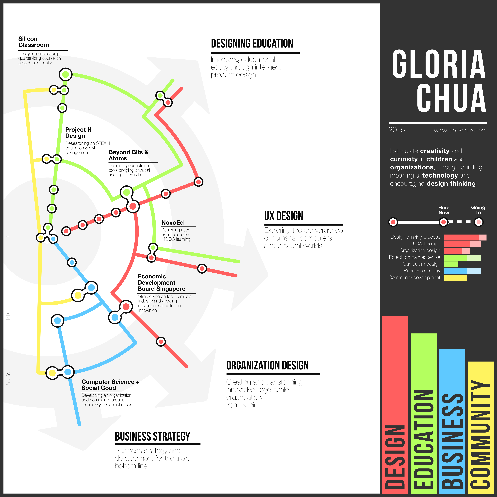
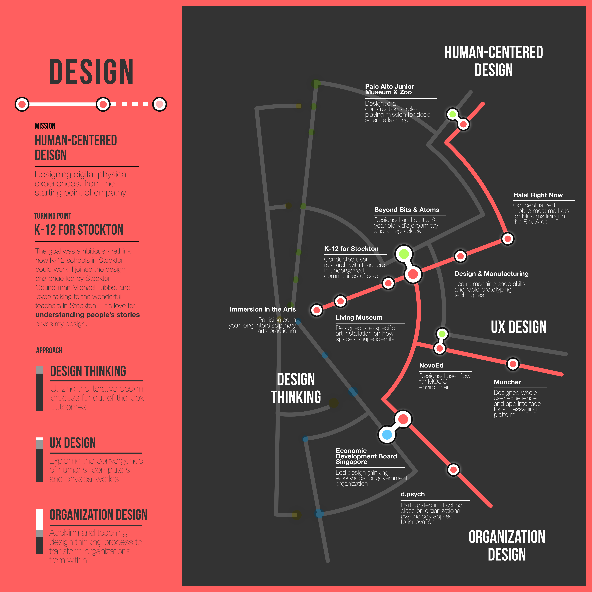
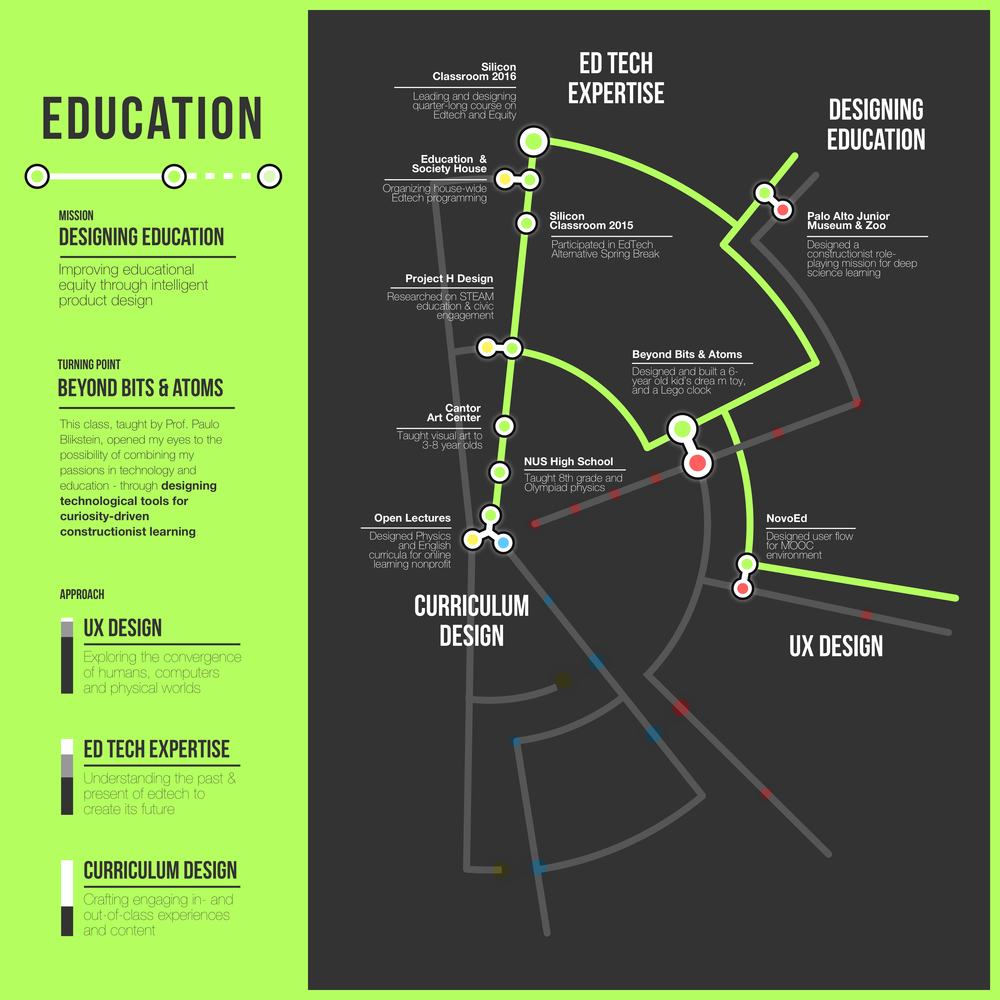
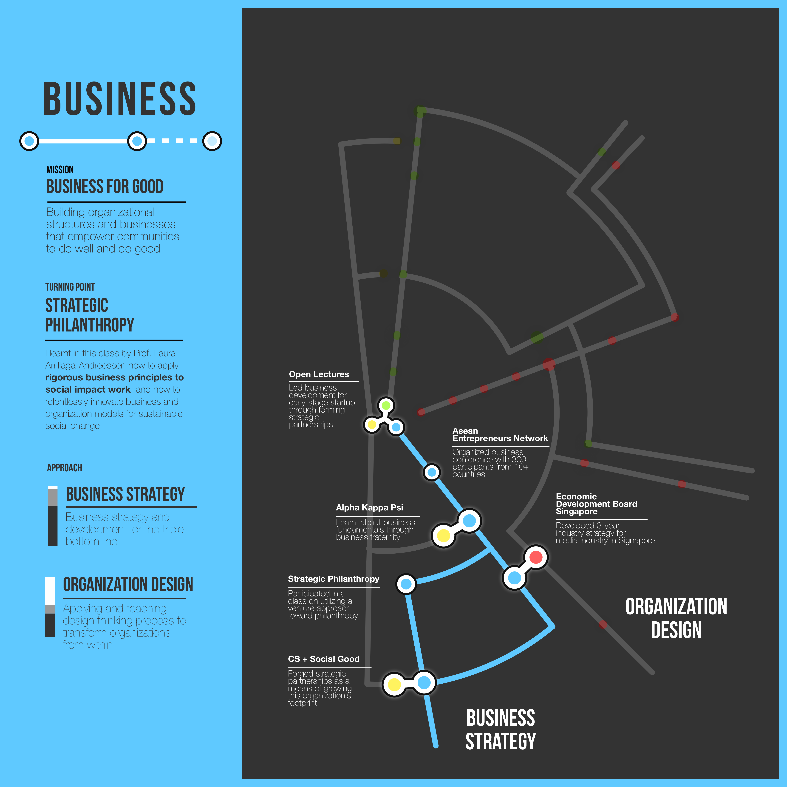
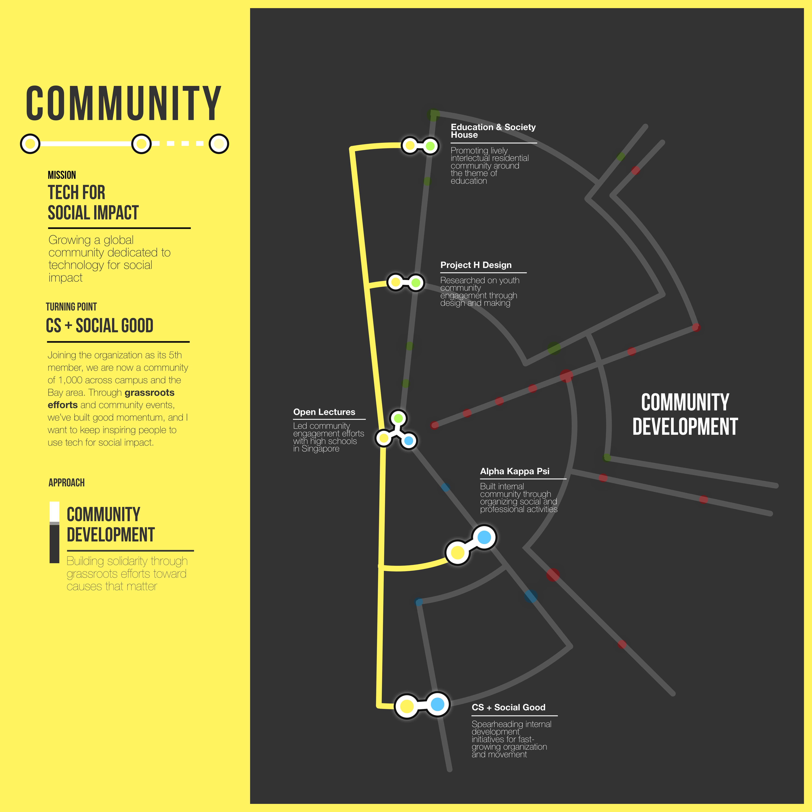
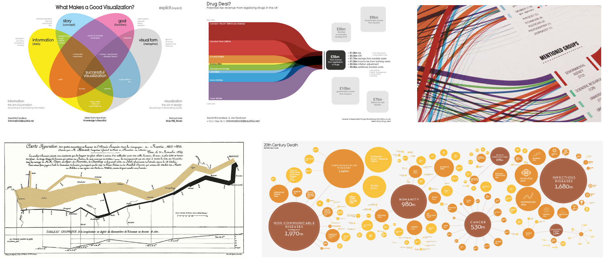
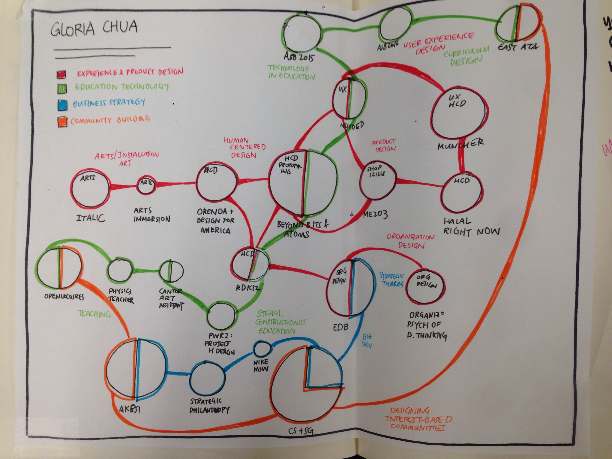
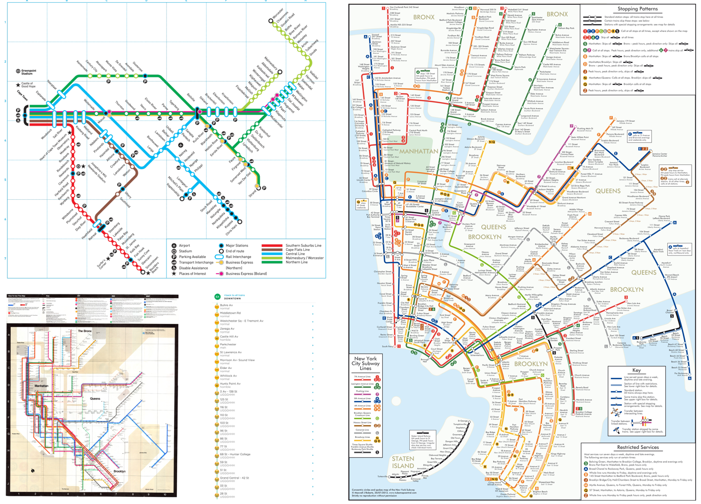
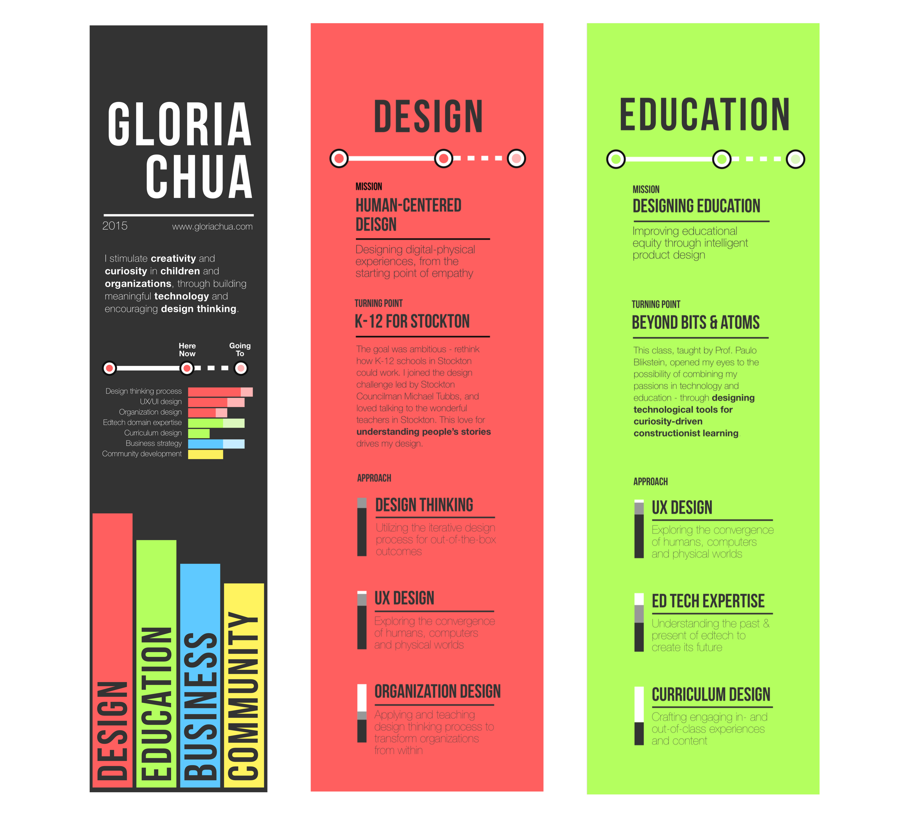

Skillprint
Skillprint is an evolving portrait of my skills, experiences and competencies, a manifesto of who I am and where I am headed.
The Skillprint was inspired by the Stanford 2025 project, which explores the undergraduate experience of the future. The provocation: "If your portfolio were a museum, your Skillprint is the museum map. What’s the big picture snapshot that instantly orients people and informs them about who you are?"
- Fall 2015
- Visual Design
- Design x Education
- Solo project
A Living Portrait of Learning
Many artifacts exist to represent an individual's skills and competencies, such as the resume, portfolio, or high school transcript. However, many tend to be retrospective in nature, failing to recognize an individual as a growing human being, and also tend to 'flatten' an individual into a laundry list, ignoring the beautiful complexities in their lives.
How might we represent an individual's complex learning experiences in a way that weaves a forward narrative of growth over time?
-

-

-

-

-

Design Principles
I started the project by identifying a few design principles:
- Multi-dimensional
The skillprint should capture a person's experiences, skills, interests, personality, and identity.
- Narrative
The skillprint should be way more than a list - it should synthesize an individual's varying dimensions to reveal a portrait of growth across time.
- Both physical and digital
In the physical world, the skillprint should be portable so that it can travel with the person. It should also live in the digital world, since so much of an individual's identity is crafted online.
Design Inspiration
I viewed this as an information design project, and found inspiration from different data visualizations.
-

Information Design
I created a paper prototype, with the objective of synthesizing the content I wanted to display and communicate. I showed them to potential users (design instructors, other students), and learnt from them that while the information was rich, it seemed more like an assortment of experiences, rather than a coherent narrative.
-

Finding a Visual Metaphor: Subway Maps
I explored various options of creating sense of coherent narrative, across temporal and thematic dimensions. Eventually, I decided on a Subway Map metaphor. First, the notion of subway lines allowed me to convey a sense of linearity across time. Second, I could have multiple subway lines to highlight different themes. Finally, a subway map still exists as an artifact in itself, a whole greater than the sum of its parts.
-

Strengthening the Narrative
In the main page, I incorporated a side bar to communicate an overarching vision that synthesizes individual experiences.Sections like "Mission", "Turning Points" and "Approach" in each subsection provide the high-level synthesis of what individual experiences culminate to.
-

Skillprint 'saved my life'
The Skillprint was very well-received by fellow students and instructors in the design community at Stanford.
It was subsequently used in a d.school K-12 Lab Network workshop and exercise. Participants were presented with 10 different skillprints (of different styles and content), and the situation: "If an asteroid crashed onto the earth and you could only choose 3 individuals to save, solely based on the Skillprints you see, who would you save?"
The verdict? My skillprint saved my life. 😉